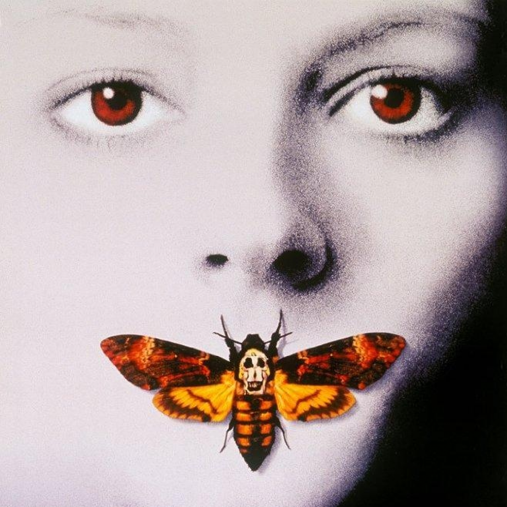

Episodio 99 · Rancho
El silencio de los corderos

Donde se comenta la novela "El silencio de los corderos" de Thomas Harris con la participación especial de Cristina Ortiz, experta en asuntos...
Episodio 99 · Rancho

Donde se comenta la novela "El silencio de los corderos" de Thomas Harris con la participación especial de Cristina Ortiz, experta en asuntos...